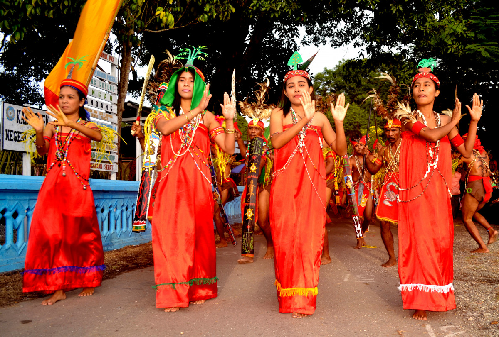
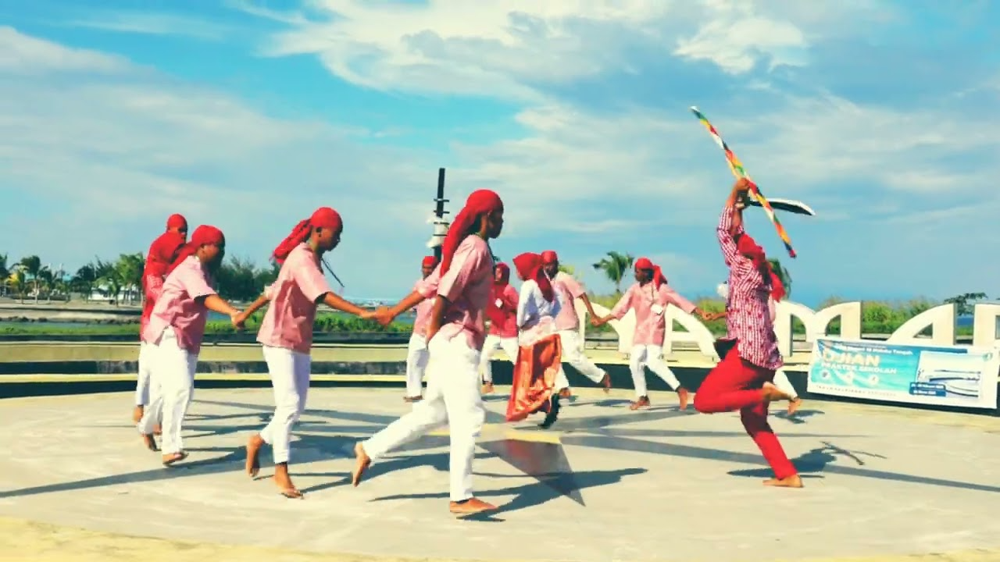
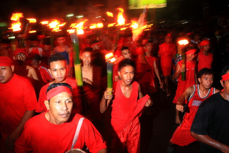
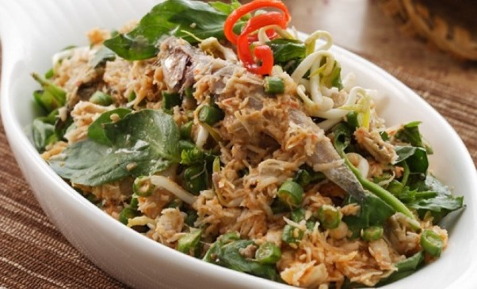
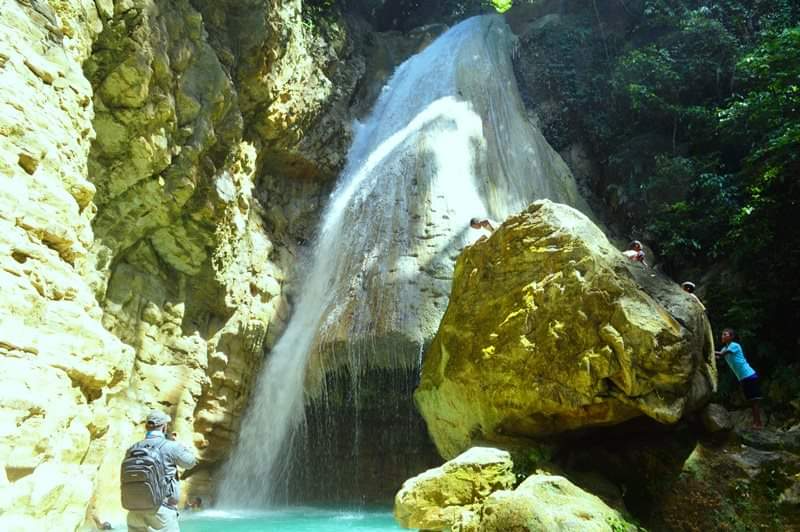

Sumatra
Nusa Tenggara
Maluku
Papua
Maluku
Maluku adalah sebuah provinsi yang meliputi bagian selatan Kepulauan Maluku, Indonesia. Provinsi ini berbatasan dengan Laut Seram di Utara, Samudra Hindia dan Laut Arafura di Selatan, Papua di Timur, dan Sulawesi di Barat. Ibu kota dan kota terbesarnya ialah kota Ambon. Provinsi Maluku berada di urutan ke-28 provinsi menurut jumlah penduduk di Indonesia, di mana pada tahun 2020, populasi provinsi Maluku berjumlah 1.848.923 jiwa.
Informasi Umum
| Nama Provinsi | Kode Wilayah | Kode Internasional | Singkatan Umum | Ibu Kota | Hari Jadi | Lambang |
|---|---|---|---|---|---|---|
| Maluku | 81 | ID-MA | Maluku | Ambon | 19 Agustus 1945 |
Budaya
Baileo adalah rumah adat Maluku, Indonesia. Baileo merupakan representasi kebudayaan Maluku dan memiliki fungsi yang sangat penting bagi kehidupan masyarakat. Baileo adalah identitas setiap negeri di Maluku selain Masjid atau Gereja. Baileo berfungsi sebagai tempat penyimpanan benda-benda suci, tempat upacara adat, sekaligus sebagai balai warga. Ciri utama baileo adalah ukurannya besar, dan memiliki bentuk yang berbeda jika dibandingkan dengan rumah-rumah lain di sekitarnya.
Manteren Lamo merupakan baju adat yang dulunya digunakan oleh sultan kerajaan Maluku. Pakaian ini sering dipadukan dengan celana panjang kain berwarna hitam dan penutup kepala atau destar (ikat kepala) khusus. Manteren Lamo terdiri dari pakaian berupa jas tertutup berwarna merah yang memiliki makna keperkasaan dan kekuasaan sang Sultan. Jas ini juga dilengkapi dengan 9 kancing besar yang terbuat dari perak.
Beberapa tari tradisional Maluku yang masih banyak dipelajari dan ditampilkan sampai saat ini.

Cakalele adalah tarian perang tradisional Maluku yang digunakan untuk menyambut tamu ataupun dalam perayaan adat. Biasanya, tarian ini dibawakan oleh 30 pria dan wanita. Tarian ini dilakukan secara berpasangan dengan iringan musik drum, flute, bia.

Tari Maku-Maku adalah seni pertunjukan yang berasal dari Maluku, Indonesia. Tarian ini bersifat sosial karena memiliki tujuan untuk mempererat keakraban anggota masyarakat Maluku. Tari maku-maku diciptakan sebagai tari pergaulan yang melambangkan persekutuan anak-anak Maluku
Bahasa Asilulu dituturkan oleh masyarakat beberapa desa di Kabupaten Maluku Tengah, Kota Ambon, dan Seram Bagian Barat, Provinsi Maluku. Bahasa ini memiliki lima belas dialek, yaitu dialek Hatuhaha, dialek Siri Sori, dialek Tanah Titawai, dialek Asiluhu Leihitu, dialek Hitu, dialek Tulehu, dialek Amahai, dialek Sepa, Dialek Tamilow, dialek Tehoru, dialek Huaulu, dialek Koa (Manusela), dialek Kaitetu, dialek Laha, dan dialek Elpaputih

Upacara adat ini untuk mengenang Pattimura, pahlawan asal Maluku yang melakukan perlawanan terhadap penjajah. Biasanya, upacara diperingati setiap tanggal 15 Mei dengan pawai obor. Dalam prosesi acara kerja sama antara masyarakat dan pemerintah setempat ini, ada kegiatan lari obor. Lari obor dimulai dari Pulau Saparua ke Pulau Ambon, kemudian pelari akan diarak ke Kota Ambon.
Senjata Kalawai merupakan salah satu senjata tradisional Maluku lain yang hampir mirip dengan tombak. Tapi, apabila dilihat lebih dekat dan memahami fungsi dari senjata tersebut, maka keduanya sebenarnya merupakan senjata yang sangat berbeda. Istilah Kawai sendiri berasal dari dua suku kata, yaitu Kala dan Wai. Kala sendiri memiliki arti yaitu tikam, sedangkan Wai memiliki arti air. Sehingga, nama dari senjata yang satu ini melambangkan fungsinya yaitu tikam air.
Tifa adalah alat musik khas Indonesia bagian Timur, khususnya Kepulauan Maluku dan Papua. Alat musik ini bentuknya menyerupai kendang dan terbuat dari kayu yang di lubangi tengahnya. Tifa mirip dengan alat musik gendang yang dimainkan dengan cara dipukul. Alat musik ini terbuat dari sebatang kayu yang dikosongi atau dihilangi isinya dan pada salah satu sisi ujungnya ditutupi, dan biasanya penutupnya digunakan kulit rusa yang telah dikeringkan untuk menghasilkan suara yang bagus dan indah. Bentuknya pun biasanya dibuat dengan ukiran. Setiap suku di Maluku dan Papua memiliki tifa dengan ciri khas nya masing-masing.
Rasa Sayange adalah lagu turun-temurun yang berasal dari Nusantara. Jika didengarkan, lagu ini layaknya seperti sajak atau pantun yang bersahutan yang merupakan tradisi lisan orang Melayu. Oleh karenanya banyak versi dari lagu ini karena liriknya dapat dibuat sendiri sesuai maksud dan tujuan dari lagu tersebut.
Kuliner
Kasbi komplet merupakan makanan khas orang Maluku yang bahan dasarnya adalah kasbi (singkong), batata, ubi, keladi dan pisang yang direbus. Selain direbus dengan air biasa, kasbi juga bisa dimasak menggunakan santan kelapa (pukat), kemudian disajikan dengan berbagai lauk seperti sayur jantung pisang, tumisan kangkung, tumisan bunga pepaya, ikan bakar rica dan kohu-kohu ikan yang didampingi juga dengan rica-rica atau colo-colo khas Maluku.
Destinasi Wisata
Air Terjun Hoko tepatnya berlokasi di Desa Hoko, Kecamatan Kei Besar, Kabupaten Maluku Tenggara, Provinsi Maluku Indonesia. Debitnya tak terlalu deras, namun memiliki air jernih dan segar yang jatuh dari batu berbentuk cembung menyerupai corong. Di bawahnya terdapat kolam alami berwarna biru muda. Tumbuhan hijau segar menghiasi tebing di kedua sisinya, sehingga nuansa asri masih benar-benar terjaga. Kolam dengan warna biru di bawah air terjun dapat kamu gunakan untuk berenang atau sekedar berendam. Kedalamannya tak lebih dari 2 meter, tak heran banyak pengunjung yang berenang di tempat ini. Dinding tebing tempat jatuhan air juga menjadi daya tarik. Ada banyak patahan kecil yang dapat didaki.